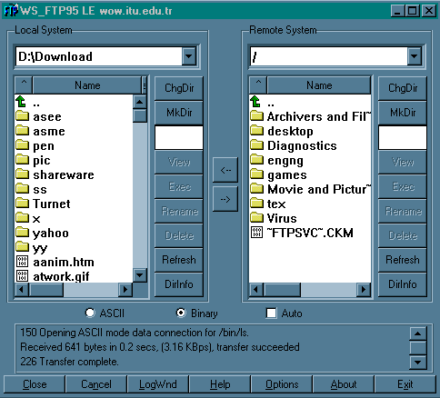

BÖLÜM 5
Bir Yerden Dosya Alma ve Bir Yere Dosya Gönderme;
FTP
FTP (File Transfer Protocol) Internete baðlý bir bilgisayardan diðerine (her iki yönde de) dosya aktarýmý yapmak için geliþtirilen bir internet protokolü ve bu iþi yapan uygulama programlarýna verilen genel addýr. Ýlk geliþtirilen internet protokollerinden biridir. FTP protokolü ile bir baþka bilgisayardan bir baþka bilgisayara dosya aktarýmý yapýlýrken, o bilgisayar ile etkileþimli-ayný anda (on-line) baðlantý kurulur ve protokol ile saðlanan bir dizi komutlar yardýmýyla iki bilgisayar arasýnda dosya alma/gönderme iþlemleri yapýlýr.
2. FTP yapmak ta ne demek? FTP yapmak için nelere ihtiyacým var?
FTP yapmak, bir bilgisayara FTP protokolü ile baðlanmak eylemini anlatan yarý Türkçe yarý Ýngilizce bir deyimdir. FTP yapmak için,
gereklidir.
3. FTP nasýl yapýlýr? Temel FTP komutlarý nelerdir?
Genel kullaným : ftp <ftp yapýlacak makinanýn adresi>
þeklindedir. Bundan sonra, ilgili bilgisayara baðlanýldýðýnda, kullanýcý numarasý ve parola (password) sorulur. Daha sonra da, o kullanýcýnýn makinasýna baglanýlmýþ olur. Bu þekilde, etkileþimli bir ortamda, (genellikle ftp> ile gösterilir) bazý komutlar verilerek iki makina arasýnda dosya iþlemleri, ayrýca baðlanýlan makinada bazý temel dosya/disk iþlemleri (dizin açma, dosya silme vb) yapýlabilir. Bazý temel FTP komutlarý ve kýsa tanýmlarý aþaðýda listelenmiþtir.:
Standart FTP komutlarý :
cd : Dizin deðiþtirme (cd <dizin adý>) (cd .. : bulunulan dizinden bir öndekine geçme)
pwd : Bulunulan dizinin ismini verir
dir : Bulunulan dizindeki dosyalarý listeleme
ls : Bulunulan dizindeki dosyalarý kisa olarak listeleme (Örnek kullanýmlar : ls -lr : ayrýntýlý, tersten alfabetik listeleme; ls -lr |more : sayfa sayfa listeleme (dizin içinde cok fazla sayýda dosya varsa bu kullaným oldukça yararlýdýr))
get : Dosya alma (get <dosya_adý> (<alýndýktan_sonraki_adý>). (<alýndýktan_sonraki_adý> seçimliktir, kullanýlmayabilir. Bu durumda dosya_adý aynen kullanýlacaktýr.
put : Dosya gönderme (put <dosya_adý> (<göndereceðimiz_yerdeki_adý>)
mget : Birden fazla dosya almak istendiðinde kullanýlýr. Örnek kullanýmlar: mget *.zip, mget a*.* vb..
mput : Birden fazla dosya göndermek istendiðinde kullanýlýr.
ascii : Dosya aktarýmlarýnda aktarým modu olarak ASCII kullanýlacaðýný belirtme.
binary: Dosya aktarýmlarýnda aktarým modu olarak BINARY kullanýlacaðýný belirtme. Arþiv dosyalarý (zip, arj, z, zoo, hqx vb), calýþtýrýlabilir programlar (.exe, .com), resim formatlý programlar (gif, jpeg vb) FTP ile alýnmadan/ya da gönderilmeden önce mutlaka bu komut verilmelidir.
delete: FTP yapýlan yerde bir dosyayý silme (delete <dosya adý>, eðer yetkiniz varsa kullanabileceðiniz bir komuttur) mkdir : FTP yapilan yerde yeni bir dizin oluþturma (mkdir <dizin adý>, eðer yetkiniz varsa kullanabileceðiniz bir komuttur)
rmdir : FTP yapýlan yerde boþ bir dizini silme (rmdir <dizin adý>, eðer yetkiniz varsa kullanabileceðiniz bir komuttur) help : Kullanýlabilecek komutlar ile ilgili bir yardým ekraný çýkarýr.
lcd : FTP ortamýndan çýkmadan, kendi makinanýzda dizin deðiþtirmenizi olanaklý kýlar.
close : FTP ortamýndan çýkmadan, sadece ilgili baðlantýyý kapatmak için kullanýlýr.
quit : FTP ortamýndan çýkmak ve baðlantýyý kapatmak için kullanýlýr (bye komutu da ayný iþi görür).
Bazý FTP merkezleri, tüm bir dizini sýkýþtýrarak gönderme kabiliyetine sahiptir. Söz gelimi, linux isimli bir alt dizini, GET linux linux.zip þeklinde sýkýþtýrýlmýþ olarak alabiliriz. ANcak, bu özellik her FTP merkezinde olmayabilir.
FTP iþlemi sýrasýnda, güvenlik olarak, baðlanacaðýmýz makinadaki kullanýcý numarasý (User Name) ve parola (Password) bilgilerini bilmemiz gerekir (Program, bunlarý bize sorar). Baðlanýlan makina, kiþiye özel ve parolasýný sadece bizim bildiðimiz bir makina olabileceði gibi, herkese açýk bir arþiv merkezi de olabilir. Böyle merkezlere herkesin kolayca eriþip dosya almasýný saðlamak için tek tip bir kullanýcý numarasý tanýmlanmýþtýr: anonymous ya da ftp
Bu merkezlere ftp yapýldýðýnda kullanýcý ismi olarak anonymous (ya da ftp) girildiðinde, bizden parola olarak KENDÝ E-POSTA ADRESÝMÝZÝ girmemiz istenir. Parola yazýlýrken GÖRULMEZ. Bu sizi sakýn þaþýrtmasýn !!! Þifre olarak kesinlikle kullandýðýnýz bilgisayarýn þifresini GÝRMEYÝN! Örnek olarak;
ftp ftp.itu.edu.tr user ftp password gokcol@sariyer.cc.itu.edu.tr (yazarken GÖRÜNMEZ)
verilebilir. Burada, þifre olarak e-mail adresinin girilmesi genellikle istatistiksel amaçlar içindir. Web üzerinden yapýlan anonymous FTP'lerde þifre girilmesine gerek kalmaz.
Aþaðýda, ftp.metu.edu.tr (ODTÜ Arþivi)'ye yapýlan örnek bir anonymous ftp görülmektedir. Kullanýcýnýn yazdýðý komutlar koyu renk, diðerleri açýk renk verilmiþtir.
---------------------------------------------------------------------------------------------------------
ftp ftp.metu.edu.tr
Connected to 144.122.1.101, port 21
220 rorqual FTP server (Version wu-2.4(4) Mon Nov 14 12:52:17 MEST 1994) ready.
USER (identify yourself to the host):ftp
>>>USER ftp
331 Guest login ok, send your complete e-mail address as password.
Password: ******
>>>PASS xxxxxx 230-##########################################################################
230-## Welcome to the Middle East Technical University Archive ## 230-##########################################################################
230-
230-Hello ftp@term4.cc.itu.edu.tr !
230-You are the 12. anonymous user.
230-Maximum number of users allowed is 100.
230-Mirrored sites are placed under the directory /pub/mirrors
230-This archive is maintained by ftpload@ftp.metu.edu.tr
230-
230- ATTENTION!
230-
230- You can reach this archive via FSP at port 21.
230-
230- We have some aliases for directory names: `quote site alias' will list them
230- Also, you can reach these directories via `cd alias-dir' command
230- independent of your current location; e.g.,
230- `cd gnu' instead of `cd /pub/2mirrors/gnu'.
230-
230-
230-
230 Guest login ok, access restrictions apply.
ftp>dir
>>>PORT 160,75,2,203,21,15
200 PORT command successful.
>>>LIST 150 Opening ASCII mode data connection for /bin/ls.
total 72
drwxrwx--- 2 276 ftp-adm 512 May 1 04:59 adm
drwxr-xr-x 2 276 ftp-adm 512 Aug 23 1994 bin
drwxr-xr-x 2 276 ftp-adm 512 May 5 08:20 dev
drwxr-xr-x 2 276 ftp-adm 512 Nov 16 08:19 etc
drwxr-xr-x 2 276 ftp-adm 512 Aug 22 1994 lib
drwxrwx--- 6 276 ftp-adm 512 Apr 11 11:40 log
drwxrwxrwx 2 root system 1024 May 5 04:52 lost+found
drwxr-sr-x 18 276 ftp-adm 512 May 11 04:56 pub
drwxr-xr-x 3 276 ftp-adm 512 Aug 22 1994 usr
226 Transfer complete.
ftp>cd pub
>>>CWD pub
250 CWD command successful.
ftp>
5. Web üzerinden FTP nasýl yapýlýr?
Son zamanlardaki genel gidiþ, tüm Internet servislerine daha becerikli ve etkileþimli ortamlardan eriþilmesi ve farklý servislerin etkileþimli olarak kullanýlmasý þekilde kendini göstermektedir. Bu ortamlardan en popüleri Web (World Wide Web) 'dir. FTP de dahil olmak üzere pek çok internet servisi ve ilave pek çok özellik bu ortamlar üzerinden kullanýlabilir. Dolayýsýyla, FTP yapmanýn bir diðer yolu da, Web üzerinden FTP yapmaktýr. Bu yöntem hem kullaným açýsýndan daha kolaydýr (komutlarý ezberlemek /bilmek zorunda deðilsiniz) hem de daha efektif sonuçlar alýrsýnýz. Binary bir dosyayý, yanlýþlýkla, standart FTP programlarý ile kolayca ASCII modda almanýz mümkün. Bu gibi sakýncalar Web üzerinden yapýlan FTP'lerde ortadan kalkmaktadýr. Ayrýca, Bookmark ve cache gibi faydalý özelliklerinden dolayý da bu ortamlarýn saðladýklarý bazý kolaylýklar vardýr. Çoðu Web istemcisinin saðladýðý grafik ara birim özelliðini de unutmamak gerek. Böylelikle, söz gelimi standart resim formatlarýnda olan bir resim dosyasýný aldýðýnýz anda görüntüyü ekrana da gönderebilirsiniz. FTP yapmanýn bu "farklý, kolay ve güzel" yolunu Web kýsmýnda bulabilirsiniz.
6. VM/CMS üzerinden FTP yapýyorum. Anonymous FTP'lerde þifre olarak kendi e-mail adresimi veremiyorum. Problem nedir?
Problem, e-mail adreslerinde görülen "@" karakterinin default (varsayýlmýþ) olarak VM sistemlerinde satýr sonu (line end) karakteri olarak tanýmlanmasindan kaynaklanýyor. FTP yapmadan once, "TERM LINEND OFF" komutunu verirseniz problem ortadan kalkacaktir. Bu komutu PROFILE EXEC dosyanýzýn içine ayrý bir satýr olarak koyarsanýz (bu durumda, týrnak icinde ('TERM LINEND OFF' olarak) vermenýz gerekebilir) makinanýzý heri açýþýnýzda bu komutu yazmaktan kurtulursunuz.
Anonymous FTP yaparken bu gibi dertlerle uðraþmak ve ikide bir username ve password vermek istemiyorsanýz aþaðýdaki REXX ile yazýlmýþ EXEC dosyayý "MYFTP EXEC" olarak kaydedin. Programda, queue "anonymous "userid()"@vm.cc.itu.edu.tr" satýrýnda @ iþaretinden sonra gelen vm.cc.itu.edu.tr yerine kendi domain adresinizi yazýn.
MYFTP <ftp yapýlacak makinanýn adresi>
þeklinde daha rahat anonymous ftp yapacaksýnýz. (Username ve password girmek zorunda kalmayacaksýnýz).
------------------------> Buradan kesiniz <----------------------
/* MYFTP EXEC */
/* */
Parse Arg ftp_addr
If ftp_addr="" then signal help
queue "anonymous "userid()"@vm.cc.itu.edu.tr"
push "FTP "ftp_addr
exit
help: Say 'Kullanim Formati : MYFTP ftp-addresi'
------------------------> Buradan kesiniz <----------------------
7. VM/CMS üzerinden FTP yapýyorum. FTP yaptýðým yerlerde bazý dosyalarýn isimleri çok enteresan. Bunlarý GET komutuyla nasýl alabilirim? (GET <dosya adý> komutu hata veriyor)
Bu problem, VM/CMS'in dosya isimlendirme sisteminin farklýlýðýndan kaynaklanýyor. VM için GET komut formatý :
GET <alinacak_dosya_adi> <alindigindaki_ismi.uzantisi.modu>
þeklinde verilebilir. Örnek olarak, baðlandýðýmýz FTP arþivinden INDEX isimli bir dosyayi almak istersek, GET INDEX INDEX.TXT diyebiliriz. Bu durumda dosya, A diskinde INDEX TXT isminde saklanacaktýr. sample-index.tar.Z isimli bir dosyayý da geçici olarak oluþturduðumuz T diskine almak isteyelim. Bu durumda uygun GET komutu; GET sample-index.tar.Z S_INDEX.TARZ.T olabilir. (Binary transfer etmeyi ve dosyanýn orijinal formatýnýn biçimini unutmayýn!!!). Böylece ilgili dosya T diskine S_INDEX TARZ olarak kopyalanacaktýr.
8. FTP yaparken, bir dosyayý nasýl almadan okuyabilirim ?
Bunu yapamazsýnýz. Bir dosyayý görüntülemek için onu transfer etmelisiniz. FTP ortamýndan çýkmadan, aldýðýnýz bir dosyayý listeleyebilirsiniz. Bunun için, unix'te '!cat <dosya_adý>', vm/cms'te 'CMS type <dosya adý>' , dos için, '!type <dosya_adý>' kullanýlýr. Bu komutlarý FTP ortamýndan çýkmadan verin. Eðer Netscape, Mosaic vb gibi bir Web istemcisi ile FTP yapýyorsanýz, programýn "setup"ýndan transfer edilecek dosya tipi için bir listeleyici (viewer) program tanýmlayarak (bu, txt dosya (metin dosyasi) için bir editör) dosya transferini doðrudan ekrana yönlendirebilirsiniz. Web sadece TXT dosyalarýn deðil, diðer formatlardaki dosyalarýn da (ses, görüntü, video vb) transfer edilirken ekrana yönlendirilmesini saðlar.
9. Ýsmini bildiðim bir dosyanýn hangi FTP merkezinde olduðunu nasýl bulabilirim?
Bu iþi yapan sistem ARCHIE olarak adlandýrýlýr. Archie ile binlerce herkese açýk (anonymous) FTP merkezindeki milyonlarca dosyanýn kayýtlý olduðu veri tabanlarý taranýr ve aranan dosyanýn (eðer varsa) hangi FTP merkezlerinde olduðu ilgili alt dizinleriyle birlikte sorgulayan kiþiye bildirilir. ARCHIE, dünyada bulunan deðiþik Archie servislerine (Archie Servers) ARCHIE programý ile doðrudan, yine bu servis saðlayýcýlarýna Telnet ile doðrudan baðlanarak kullanýlabilir ve sorgulama yapýlýr. Archie sorgulamasý e-mail ile de yapýlabilir. Kullanýmý özetlemek gerekirse,
Bazý archie servisleri þunlardýr : archie.internic.net, archie.rutgers.edu, archie.sura.net, archie.doc.ic.ac.uk, archie.funet.fi, archie.th-darmstadt.de, archie.uqam.ca, archie.ans.net
Ayrýca, web üzerinden de benzeri taramalar yapabileceðiniz iyi bir servis var: FTP Search. http://ftpsearch.ntnu.no/ftpsearch Bu servis, iyi bir kullanýcý arayüzü ve zengin seçenekleri ile, aradýðýmýz programlarýn bulunduðu siteleri ve dizin bilgilerini bize vermektedir.
http://www.shareware.com servisi de, benzer amaçlar için kullanýlabilir.
10. FTP ile bir dosyayý alýrken, herhangi bir nedenle, baðlantý kesildi. Daha sonra kaldýðým yerden aktarýma devam edebilir miyim?
Özellikle düþük hýzlý baðlantýlarda ve modem ile yapýlan baðlantýlarda karþýlaþtýðýmýz bir problem!. Dosya aktarýmý yarým kalmýþsa, kaldýðýnýz yerden aktarýma devam etme þansýnýz herzaman olmayabilir. Standart FTP buna izin vermez. Ancak, bazý ftp siteleri "bu tip yarým aktarýmlara" izin verebilir. Bu durumda, kullandýðýnýz FTP programýnda da (reget, resume vb) benzeri komutlar varsa, aktarýma kaldýðýnýz yerden devam edebilirsiniz. Eðer win95/nt altýndan baðlantý yapýyorsanýz, CuteFTP (http://www.cuteftp.com) bu tip sorunlarýnýzý çözecektir. Ayrýca, BulletProof FTP de benzer iþi yapar. Ayný zamanda, web (http) transferlerinizi de doðrudan bu program üzerinde yapabilirsiniz. Daha fazla bilgi için adresi : http://www.bpftp.com . Her iki program da, ayný zamanda, Raksnet Tucows arþivinden alýnabilir (http://tucows.raksnet.com.tr/tucows/window95.html)
11. FTP yaparken dikkat edilmesi gereken hususlar var mý?
Tabii ki var!! Aþaðýdaki hususlara dikkat etmemek çoðunlukla bir sürü boþa giden zamana mal olacaktýr.
12. Anonymous FTP'de dosya gönderilmesi ve incoming dizininin kullanýmý
FTP'de baðlandýðýmýz makinaya dosya göndermek istersek, bunu PUT komutu kullanarak yapýyoruz. Anonymous FTP'lerde baðlandýðýmýz makinaya bir dosya gönderme (yani yazma) hakkýmýz -genellikle- yoktur. FTP siteleri, kullanýcýlarýn belli bir süre dosyalarýný koyabilmeleri için bir dizin açmýþlardýr : bu dizinin adý incoming. genellikle kök (root) dizininde, ya da pub'ýn altýnda (pub/incoming) olarak bulunur. Anonymous FTP lerde, sadece incoming dizinine yazma yetkimiz vardýr. Buraya alt dizin açabilir, program kopyalayabiliriz (PUT ile). incoming özellikle, kullanýcýlarýn internet'te bulduklarý ilginç programlarý baþkalarý ile paylaþabilmeleri için güzel bir ortam. Bazý sitelerde incoming kullanýmý kýsýtlanmýþ olabilir. Bu kýsýtlamalar deðiþiktir. Dizin açma, dosya upload etme (gönderme), dosya silme, incoming içindeki dosyalarý görme, incoming içindeki dosya sayýsý ve uzunluk limitleri vb gibi özelliklerden bir kýsmý ya da tamamý iptal edilmiþ olabilir.
Incoming kullanýmýnda uymamýz gereken bazý kurallar var :
13. Internet eriþimim yok. e-mail ile FTP yapabilir miyim?
Evet, yapabilirsiniz. e-mail ile FTP komutlarýnýn gönderildiði servisler vardýr. Bu servisler, komutlarý mail gönderen kiþinin adýna iþlerler ve sonucu mail ile kullanýcýya gönderirler. Eðer kullanýcý bir dosya istemiþse, bu, genellikle, uuencode edilmiþ olarak küçük parçalar halinde e-mail ile gönderilir (encode/decode hakkýndaki bilgiyi "Elektronik Posta (e-mail)" kýsmýnda bulabilirsiniz. Turkiye'de böyle bir servis var. Bu servisin adý 'Bilserv (Bilkent Mail Server)'. Bilserv Servisi Bilkent Üniversitesi'nde çalýþmaktadýr.
Bilkent Mail Server:
Mail server otomatik cevaplama yeteneði olan bir programdýr. bilkent-server@bilkent.edu.tr, ve bilserv@bilkent.edu.tr, ya da mail-server@bilkent.edu.tr adreslerine bir dosya içinde gönderilen komutlara göre bazý bilgi ve/veya dosyalarý belirtilen adrese gönderir. Program, komutlarý belirli bir syntax'ta beklemektedir; gönderilen dosya'yý okuduktan sonra þayet ciddi bir hata yoksa istenen bilgi ve/veya dosyalarý gönderecektir. Program HER ZAMAN bir alýndý mesaji (dosya içinde) gönderecektir: Hatanýn nerede olduðunu ve cok kýsa bir komut özeti gönderecektir.
Mail Server çok yetenekli bir programdýr ve FTP yanýnda size dosya temelli pek çok hizmet sunar. Bilkent Mail Server hakkýnda daha ayrýntýlý bilgiyi, 'bilserv@bilkent.edu.tr' adresine bir e-mail mesaji içinde HELP komutunu göndererek elde edebilirsiniz. Ayrýca,
send bilkent-arsiv.txt
end
satýrlarýný bu adrese gönderirseniz, Bilserv'i ve Bilkent Arþivlerini anlatan bir dökumana da eriþebilirsiniz.
14. Grafik Arabirimli FTP ne demektir?
Klasik anlamda FTP yaparken, klavye ile bir takým komutlar yazarýz. Son yýllarda geliþtirilen bazý programlar kullanýcýnýn bu komutlarý vermesine gerek kalmadan grafik bir ara birim ile daha kolay FTP yapmasýna olanak tanýrlar. FTP komutlarý ya pull-down/pop-up menülerden alýnýr; ya da tek bir fare týklatmasý ile deðisik FTP komutlarý icra edilir. Bu tip programlara bir örnek, PC/Windows altýnda çalýþan, John Junod'un geliþtirdiði WS_FTP'dir. (http://www.ipswitch.com 'dan alýnabilir). Unix ortamýnda xftp/oftp/mftp, ftptool gibi programlar vardir. Gopher ve Web içinden yapacaðýnýz FTP de bu tip FTP'lere benzer. Aþaðýda, WS_FTP (sürüm 4.10) için klasik ekran düzeni görülmektedir. Sol taraftaki bilgiler yerel diske ait, sað taraftakiler ise baðlandýðýmýz yere aittir. Kullanýcý, menü sistemi yardýmýyla dosya transferi ve bazý temel FTP operasyonlarýný gerçekleþtirir.

15. Türkiye'deki FTP merkezleri nerelerdir?
Bunlarýn tam listesini Bilkent ve ODTÜ Web/Gopher'larýnda "Internet Services in Turkey" sayfalarýnda bulabilirsiniz. Pek çok yerel Web servisinde de, benzer þekilde, Türkiye'deki FTP merkezlerine linkler vardýr.
Bazi FTP merkezlerini listelemek gerekirse,
ftp.metu.edu.tr ODTU arþivi(*) ftp.bilkent.edu.tr Bilkent Arþivi (**), ftp.ege.edu.tr Ege Arþivi, ftp.itu.edu.tr ITU Arþivi, ftp.boun.edu.tr Boðazici Üniv. Arþivi. Ayrýca, Internet servis saðlayýcýlarýnýn ve diðer pek çok internet baðlantýsý olan kuruluþun FTP servisleri vardýr (ftp.doruk.com.tr, DorukNet Arþivi gibi). Türkiye'deki bazý önemli FTP arþivleri ile ilgili bilgiler "Türkiye'deki Ýnternet Servisleri" kýsmýnda daha ayrýntýlý verilecektir.
(*) ftp.metu.edu.tr, dünyaca popüler bazý arþivleri bünyesinde tutmaktadýr (mirroring). Bunlardan bazýlarý; sunsite-Linux, Simtel-msdos ve windows 3.1/95, uwp-games, cica, novell, microsoft, netscape, faq
(**) Bilkent Arþivi'nde Internet ile ilgili Türkçe/Ingilizce dökümantasyon, çok iyi bir TeX arþivi, PC programlarý, internet servis programlarýnýn kaynak kodlari vb bulunmaktadýr. Bilkent Arþivi'ni anlatan bir döküman ftp://ftp.bilkent.edu.tr/pub/INFO/Turkce/Internet/bilkent-arsiv.txt 'dan alýnabilir. Ayný dökuman .ps (post script) ve .lj (laser jet), tex ve .dvi formatlarýnda da bulunabilir.
FSP (File Send Protocol ?), FTP'ye alternatif olarak geliþtirilen bir protokoldür. FTP'ye olan en büyük üstünlüðü, yarýda kalan bir dosya transferi iþlemine kaldýðý yerden daha sonra devam edilmesine izin vermesidir. Hat hýzlarý arttýkça bu protokol popüleritesini yitirmiþtir.
Web istemcileri (listeleyici, browser) ilk çýktýðý andan itibaren, standart URL-ler ile, gopher menülerine benzer bir yapý içinde FTP yapýlmasýna imkan tanýmýþlardýr. Halen günümüzdeki en popüler FTP uygulamalarý da böyledir. Eskiden metin bazlý bir sürü komutla yapýlan FTP'ler yerini büyük çoðunlukla Web içinden menülü FTP lere, ya da grafik arabirimli FTP'lere terketmiþtir. Web'in çok renkli ve entegre sistemi içinde dosya transferi de yerini almýþtýr ve gerek dosyalarýn arþivlerden listelenmesi, gerekse bunlar üzerinde çalýþan tarama sistemleri Web ile bütünleþmeye baþlamýþtýr. Önümüzdeki günlerde klasik anlamdaki FTP kullanýmýnýn yavaþ yavaþ azalacaðýný bekleyebiliriz.